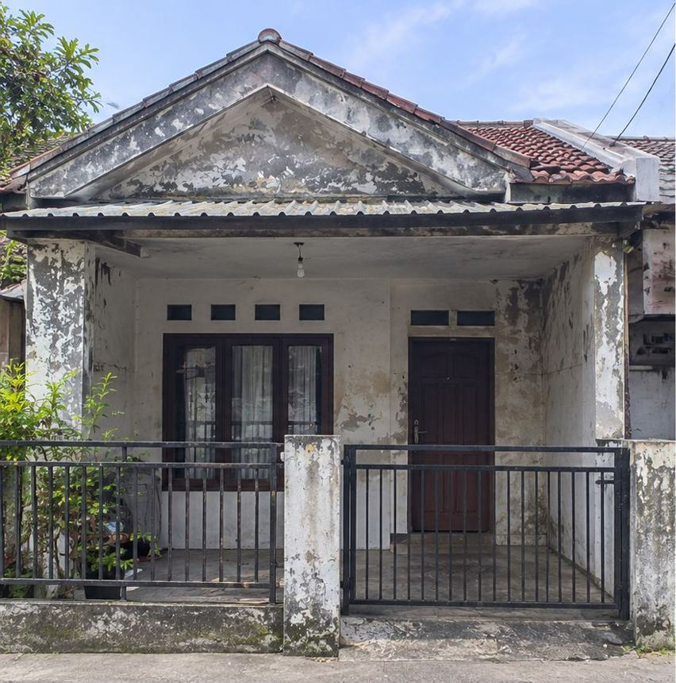

Atap bocor
Air masuk saat hujan, plafon bernoda, atau genteng bergeser. Kami mencari sumber kebocoran lalu memperbaikinya.
- Genteng pecah atau bergeser
- Sambungan dan nok bocor
- Plafon bernoda akibat rembesan

Perbaikan atap · Serang, Banten
Atap bocor, rangka lapuk, atau ingin ganti ke baja ringan? Kirim foto atap Anda dan admin Mugi Jaya membantu menghitung biayanya.
Air masuk saat hujan, plafon bernoda, atau genteng bergeser. Kami mencari sumber kebocoran lalu memperbaikinya.
Rangka kayu yang lapuk, dimakan rayap, atau melengkung diganti dengan rangka baja ringan.
Perbaikan sebagian atau penggantian penutup atap agar atap dan tampak depan rapi kembali.

Sebelum SesudahAtap baru, cat ulang, lampu dinding, dan pagar.
Foto titik bocor atau kerusakan, plus perkiraan ukuran atap.
Admin menilai kondisi dan menentukan perbaikan sebagian atau penggantian.
Kebutuhan bahan dihitung dan disiapkan setelah Anda setuju.
Atap dikerjakan lalu dicek bersama Anda sebelum selesai.
Biaya bergantung pada luas atap, tingkat kerusakan, dan bahan. Kirim foto ke admin untuk perkiraan biaya. Untuk daftar harga jasa desain dan renovasi ruangan, lihat halaman harga.
Isi nama dan nomor WhatsApp. Admin menghubungi Anda untuk meminta foto atap dan membahas perbaikannya.
Belum menemukan jawabannya? Tanyakan langsung ke admin lewat WhatsApp.
Biaya tergantung luas atap, jumlah titik bocor, dan bahan yang dipakai. Kirim foto atap dan ukurannya ke admin Mugi Jaya untuk mendapat perkiraan biaya.
Bergantung luas atap dan jenis penutupnya, misalnya genteng atau atap metal. Admin menghitung setelah menerima ukuran atau setelah pengecekan di lokasi.
Tidak selalu. Kebocoran di satu titik kadang cukup diperbaiki di bagian itu, sedangkan rangka yang lapuk atau berkarat biasanya perlu diganti. Admin menilai dari foto lebih dulu.
Baja ringan tidak dimakan rayap, tidak lapuk oleh air, dan lebih ringan sehingga beban ke dinding lebih kecil. Pemasangan tetap harus rapi agar rangka kuat.
Serang, Cilegon, Cikande, dan wilayah Banten lainnya.